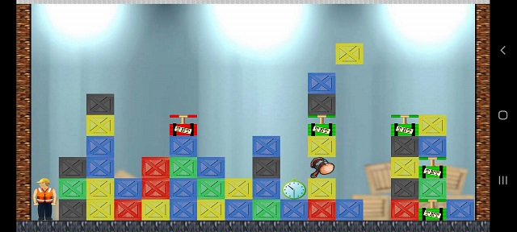
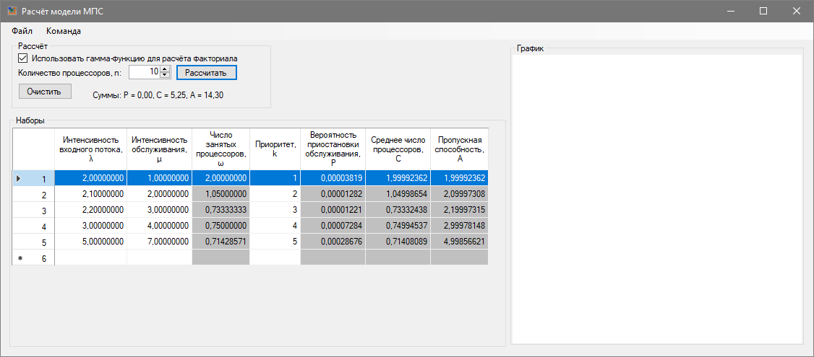

Boxes

Описание:
Разработка 2D игры под Android с применением движка LibJDX. Язык Java. Цель - изучение движка.
Conceptual graphs
Описание:
Десктопное приложение для моделирования концептуальных графов. Разработка под нужды университета совместно с сотрудниками университета и аспирантами. Имеется регистрация в реестре программ для электронно-вычислительных машин.
Ссылка на документ в реестре: Тут
Программа моделирования системы массового обслуживания

Описание:
Десктопное приложение для моделирования стохастических сетей. Разрабатывалась под нужды университета для студентов для изучения курса теории сетей массового обслужвания